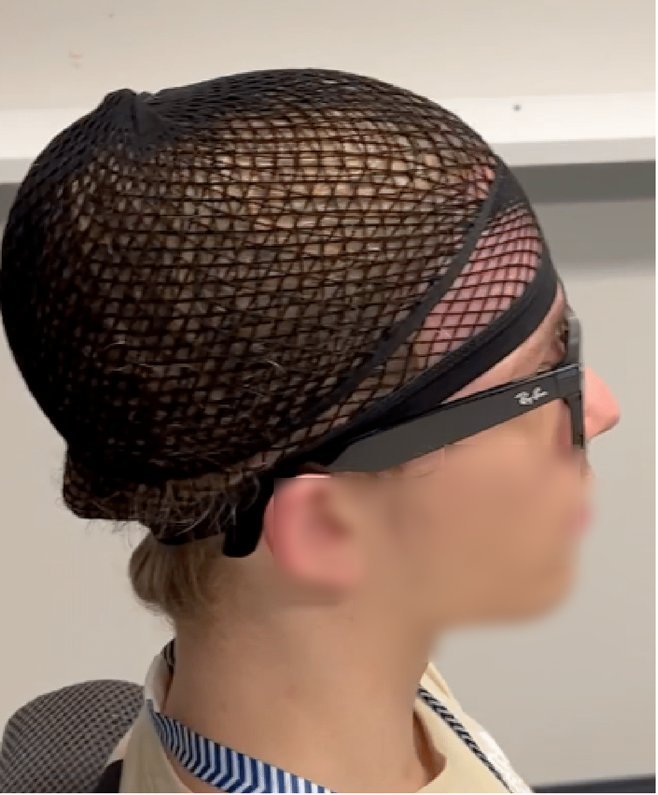
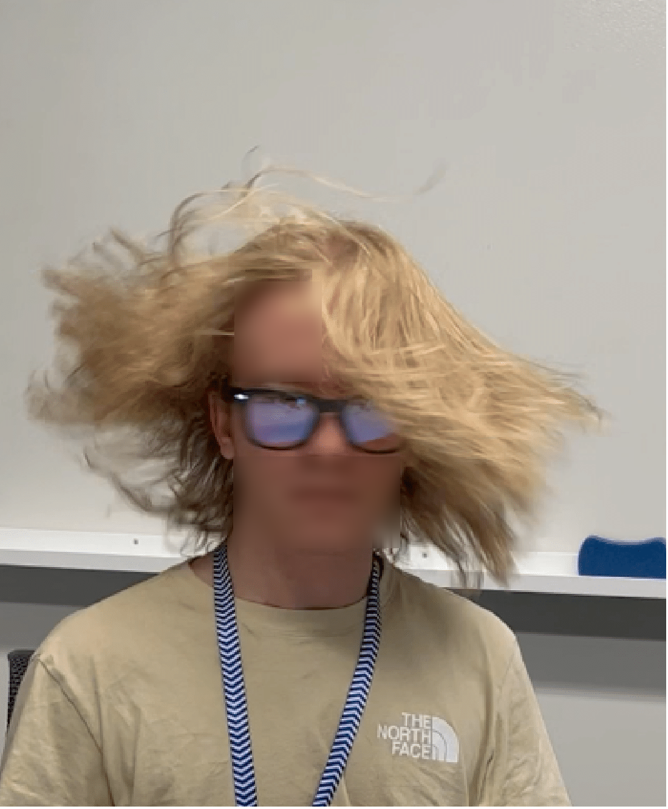

HNM Dataset

(a) Clean speech while wearing wig-cap

(b) Hair noise due to shaking head

(c) Hair noise due to playing with hair
Layered data collection setup to obtain clean speech and hair-noise (hair-playing and head-shaking) recordings.
The data collection process involved multiple scenarios to capture both clean speech and various types of hair noise. Participants wore a wig-cap during clean speech recording to prevent any hair interference, ensuring a noise-free baseline. Hair noise was then systematically introduced through two distinct methods: head-shaking movements and deliberate hair-playing actions. This layered approach allows for controlled analysis of different hair noise characteristics and their impact on audio quality in head-worn devices.